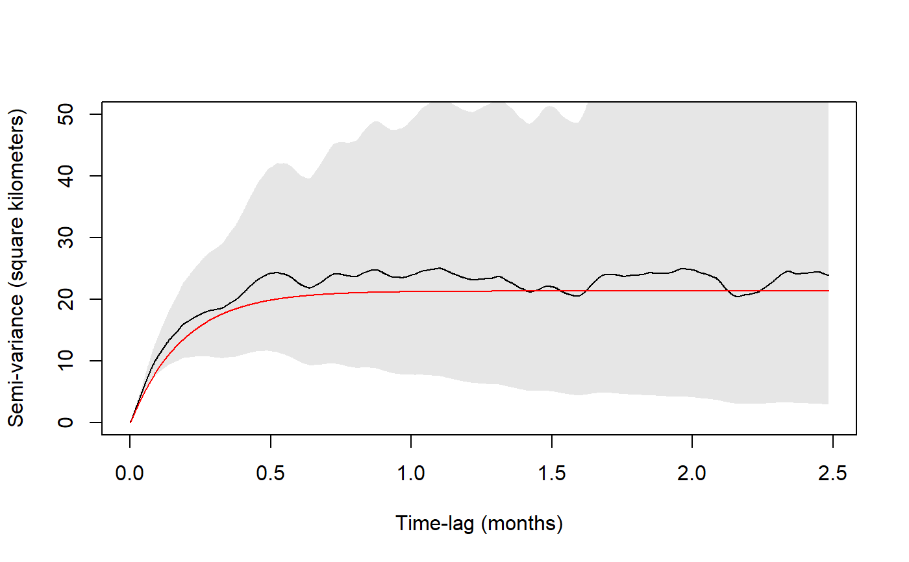

variogram.fit.RdThis function plots a variogram object overlayed with a continuous-time movement model guesstimated from the variogram's shape. Sliders are given to adjust the parameter guesstimates and the result can be saved to a global variable. The intention of this function is to facilitate good starting guesses for ctmm.fit, starting with a prototype hypothesis argument CTMM, which can contain features such as isotropic, range, circle, etc..
ctmm.guess(data,CTMM=ctmm(),variogram=NULL,name="GUESS",interactive=TRUE) variogram.fit(variogram,CTMM=ctmm(),name="GUESS",fraction=0.5,interactive=TRUE,...)
| data | A |
|---|---|
| CTMM | Optional model prototype or initial guesstimate of the model parameters, in |
| name | Name of the global variable to store the guesstimate in. |
| interactive | Boolean denoting whether to render the initial guess with interactive sliders or store the result silently. |
| variogram | A |
| fraction | Initial fraction of the variogram to render. |
| ... | Optional parameters passed to |
By default, sigma is the asymptote of the variogram and tau is an array of autocorrelation timescales. The position timescale is roughly the time lag it takes of the variogram to reach 63% of its asymptote. The velocity autocorrelation timescale visually corresponds to width of the concave bowl shape at the beginning of the variogram. If CTMM=ctmm(range=FALSE), sigma is the asymptotic slope of the variogram and only the velocity timescale is finite.
By default, parameter values are estimated from the shape of the variogram. If this fails, the CTMM option can provide alternative initial guesstimates.
If the manipulate package is unavailable, then interactive is set to FALSE.
#Load package and data library(ctmm) data(buffalo) #Extract movement data for a single animal Cilla <- buffalo$Cilla #Calculate variogram SVF <- variogram(Cilla) # generate a visual fit of the variogram (requires RStudio or a guess object is returned) variogram.fit(SVF)